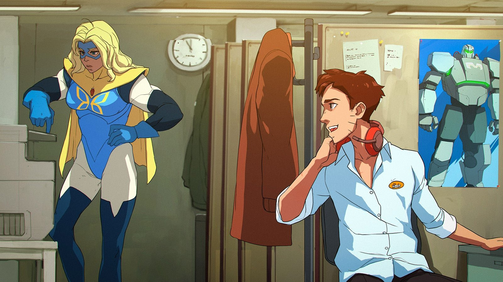
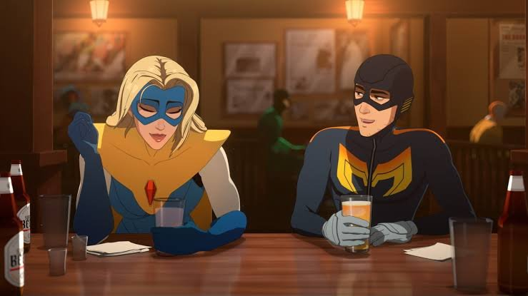

If you follow the narrative games space, you know we have been stuck between a rock and a hard place for years. Developers have essentially faced a brutal distribution binary: drop the entire game at once and watch streamers spoil the ending on Day One, or use a traditional episodic model and bleed your player base dry over months of agonizing waits.
Enter Dispatch. Released by AdHoc Studio in late 2025, Dispatch didn't just survive this binary, it shattered it. By gating its eight episodes into twin-packs across four consecutive weeks, the studio engineered a sustained, one-month cultural footprint. The result? Over 1 million units sold within the first ten days. This wasn't a marketing gimmick; it was a fundamental alignment of game design, technical architecture, and release logistics.
The Core Product: Plate-Spinning with Supervillains
Before you can understand the rollout, you have to understand why the mechanics demanded breathing room. Dispatch merges the branching dialogue of prestige interactive fiction with the high-stress resource allocation of a management sim.
You play as Robert Robertson III, formerly the superhero "Mecha Man." But your suit is busted, and now you are stuck running the Superhero Dispatch Network. Your job? Managing a chaotic, highly volatile roster of reformed villains known as the Z-Team.

Mechanically, the game fires on three distinct cylinders:
- Resource Allocation & Team Volatility. You are constantly assigning Z-Team members to dynamic city crises. Every reformed villain carries distinct, high-value skills, but they also carry disruptive toxic traits. Success means balancing the operational demands of a crisis against the incredibly fragile psychological state of your roster.
- Real-Time Crisis Intervention. Once a team is deployed, you are the "guy in the chair." You monitor progress through radio and dispatch consoles, making split-second dialogue decisions to guide the team through operational bottlenecks or stop characters from reverting to their villainous habits.
- Cascading State Management. Here is where the teeth are. A flawless operational save might trigger a massive PR fallout. Under the hood, this requires a robust state-management architecture. The game isn't flipping simple booleans; it relies on complex event systems, likely a mix of underlying C# logic communicating with the narrative designers' visual scripting tools, to ensure a subtle choice in Week 1 accurately updates UI elements, dialogue trees, and character behaviors in Week 4 without breaking the build.
The 28-Day Sprint: A New Distribution Playbook
To mirror the "watercooler effect" of premium weekly television, AdHoc Studio skipped traditional multi-month release cycles entirely. Instead, they opted for a strict, 28-day global cadence.
Week 1: Establishing the Loop
Oct 22Episodes 1 & 2 (Pivot, Onboard). Introduced the core crisis-management mechanics and set up the deeply flawed Z-Team roster.
Week 2: Enforcing Consequences
Oct 29Episodes 3 & 4 (Turnover, Restructure). Forced players to grapple with the immediate, messy fallout of their Week 1 dialogue choices.
Week 3: The Climax
Nov 5Episodes 5 & 6 (Team Building, Moving Parts). Pushed the narrative tension to its peak, maximizing community theorizing and podcast fodder.
Week 4: The Finale & The Binge
Nov 12Episodes 7 & 8 (Retrospective, Synergy). Concluded the story, satisfying the core fanbase while opening the door for the "wait-and-see" audience to buy the completed game.
Why the Old Models Are Failing
The industry has long debated how best to deliver narrative-heavy experiences. Dispatch sits squarely between the two legacy approaches, aggressively capturing the strengths of each while shedding their baggage. The release model shapes a game's whole cultural footprint over time:
The Day-One Drop (The Binge Model)
The current industry standard treats narrative games like blockbuster films. Alan Wake 2 or Life is Strange: True Colors drops the entire story at launch.
- The appeal. Deep, uninterrupted immersion. You experience the complete emotional arc without artificial cliffhangers.
- The drawback. It demands a massive upfront marketing spend to capitalize on a tiny two-week window. Worse, narrative games are highly susceptible to streamer culture: once a popular creator plays through, the story is spoiled globally, and the cultural footprint vanishes almost immediately after launch week.
Traditional Episodic (The Telltale Model)
Releasing single episodes spaced months apart.
- The appeal. Studios could fund later episodes with revenue from earlier ones, and adapt to community feedback in real time.
- The drawback. Severe player fatigue. The momentum from Episode 1 completely evaporated by the time Episode 3 arrived four months later. Players forgot plot details, grew frustrated, and learned a new consumer behavior: wait a year and buy the "Complete Season" on an inevitable Steam sale.
A one-week wait between episodes perfectly mirrors prestige HBO television. It is long enough to foster intense theorizing and fan art, yet short enough that players never lose the narrative thread or drift to competing titles.

The Hidden Costs: Why Doesn't Everyone Do This?
If this model prints money and sustains hype, why isn't every studio doing it? Because the trade-offs are absolutely brutal.
It requires a flawless live-ops pipeline. Four consecutive cross-platform updates demand flawless QA and deployment. Managing cross-episode save states, ensuring a subtle dialogue choice in Episode 2 properly triggers an animation in Episode 4, puts heavy pressure on certification and hotfix workflows. Imagine dealing with Sony and Microsoft certification windows every seven days. The studio effectively operated as a "live-service game for a month."
There is zero room for filler. The model relies on uniform episode quality. A single padded, mechanical, or boring weekly drop could collapse momentum and community sentiment before the next release.
Completeness is a strict prerequisite. Unlike traditional episodic models or Early Access, a compressed rollout is entirely live-ops rather than developmental. The game must be 100% feature-complete before Week 1. You cannot fund the ending with the beginning; the deployment gaps are used purely for stability patches, build certification, and community management.
Dispatch proved that player attention spans aren't shrinking, they just require the right cadence. The 7-day window is the golden ratio for narrative games: long enough to cultivate rich community interaction, yet short enough to keep players hooked until the credits roll.